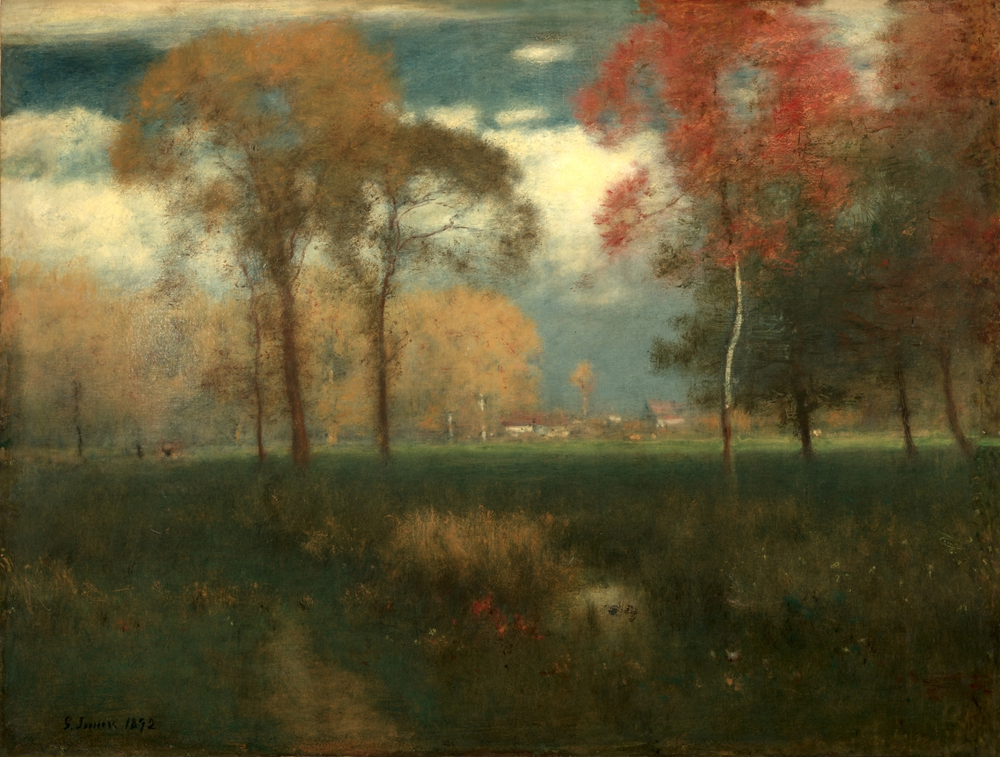
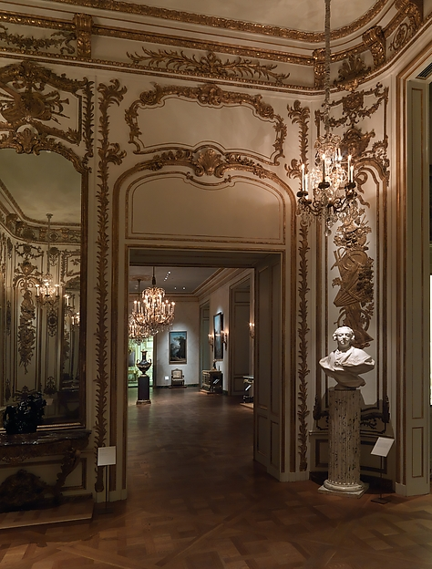
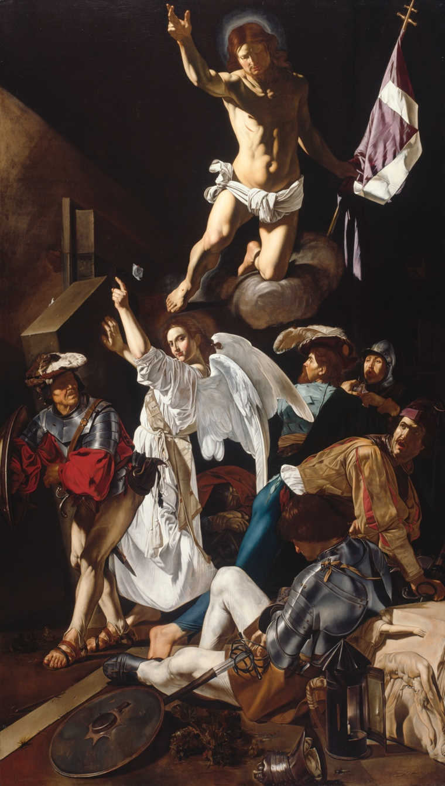
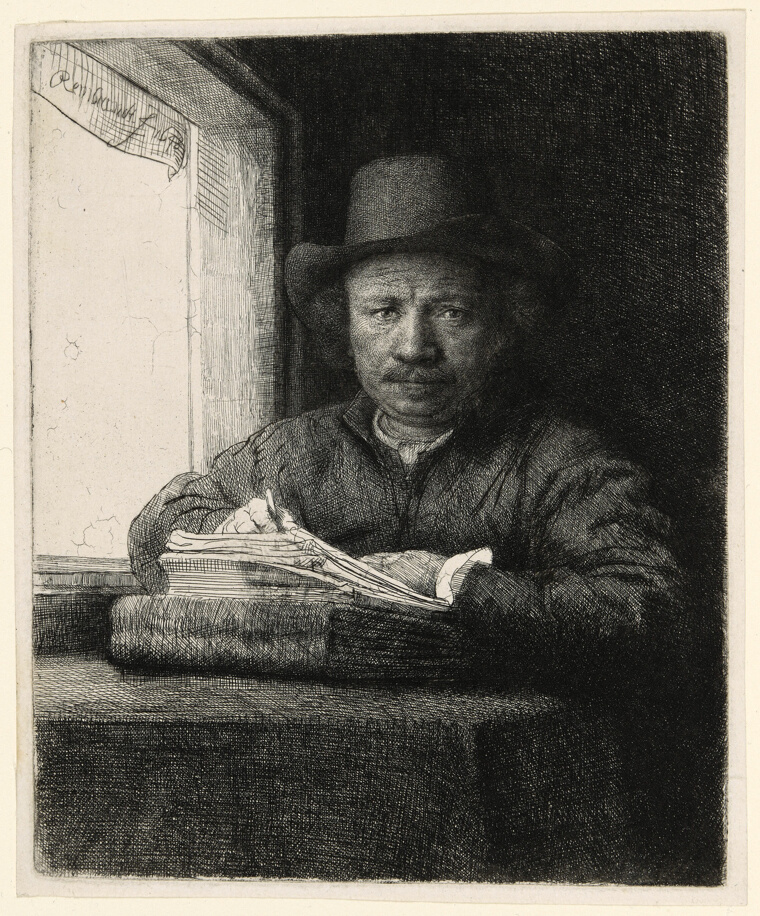
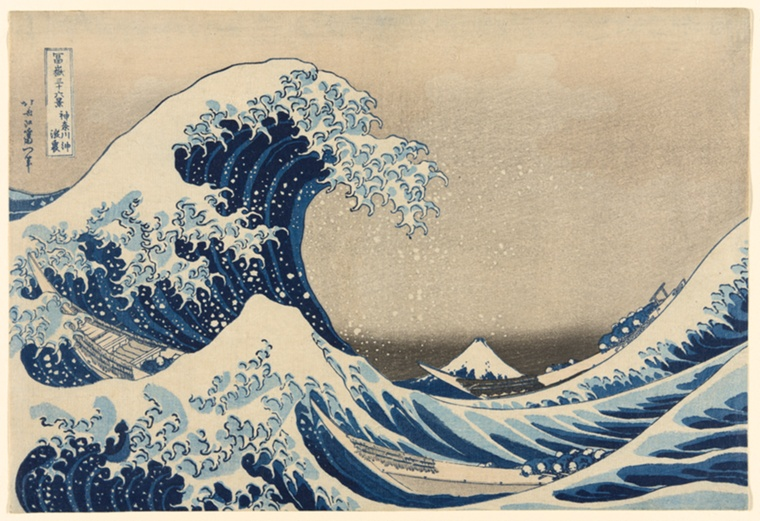
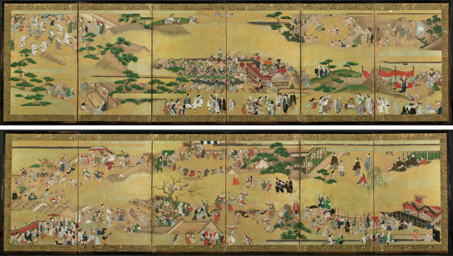

dear you,
i've been meaning to write. i kept getting distracted by the light — which is, i've decided, what everything is actually about. color, paint, dusk, the way the world shows off when it thinks no one's watching. i started pulling things out of folders to show you and now there's a small pile, so i'm just going to enclose them as i go. read it like a letter. take your time.
here. start with this one. i'm enclosing it first because it's the whole feeling of the letter in eight lines — that thing where you're walking and suddenly the world just widens.
enclosed, first — a poem
Life
At every step it widen'd to my sight —Wood, Meadow, verdant Hill, and dreary Steep,
Following in quick succession of delight, —
Till all — at once — did my eye ravish'd sweep!
May this (I cried) my course through Life portray!
New scenes of Wisdom may each step display,
And Knowledge open as my days advance!
he's catching his breath at it — that almost physical gasp of "may my whole life be like this." & it's not cynical about growing up. it actually believes each day can crack you open a little wider.
i think about light most at dusk, which is maybe obvious of me. there's a george inness i can't get out of my head — the moment the light goes thin and the whole world feels like it's about to turn inward. i'm taping it in so you can hold it up to your own window.
held up to the light — a painting, taped in

Cleveland Museum of Art · CC0
those glowing trees, gold & red against that moody sky — it's a whisper about change coming. the light's already half-gone and the painting knows it.
but i don't want to give you the wrong idea, that light only matters when it's sad. sometimes it's pure showing-off. i found a whole room — an actual room — carved and gilded so completely that the oak forgot it was oak. every surface dancing. i had to sit down.
enclosed — one entire room

Carved and gilded oak · The Metropolitan Museum of Art · Open Access
every surface is dancing. curves flowing into curves, so much you forget it's wood. there's a kind of generosity to it — everything leaning toward beauty, even in the smallest detail.
(small confession, halfway through)
the truth is i go looking for light in faces. there's a portrait the size of your palm — watercolour on ivory, 1798 — and the man in it, Jonathan Henderson, is twenty-six and looking directly at you across two hundred years. ivory is so fragile. someone painted a whole steady gaze onto a thing that could crack. i can't get over it.
enclosed — taped in, carefully

Jonathan Henderson (1772–1833), 1798
Watercolour on ivory — Art Institute of Chicago
the tininess is the whole tenderness of it. his gaze steady & a little thoughtful, & somehow the small format makes it feel like he's right there in your palm. i keep saying that. i mean it.
and then sometimes light is just violence — the good kind, the kind that changes a room. cecco del caravaggio painted a resurrection where the whole bottom half is chaos and armor and grief, and then above all of it a figure almost glowing, one arm flung open like he's still shouting. you can feel the light about to reach the soldiers who haven't looked up yet.
enclosed — light as an event

The Resurrection, c. 1619–20 — Oil on canvas
Art Institute of Chicago · CC0
i could go quieter though. rembrandt etched himself at a window, pen poised mid-gesture, darkness gathered all around him so that one sliver of window-light becomes the only real thing in the room. it's the most honest picture of paying attention i know. just the artist, the work, the weight of looking hard.
enclosed — the quiet one

Self-Portrait Etching at a Window, 1648
Etching, drypoint & burin — Art Institute of Chicago
frozen mid-gesture, caught in his own concentrated gaze. the dark makes the window-light feel like the only real thing. intimate the way a studio always is.
two more and then i'll let you go, i promise. you have to see what hokusai did with all of this — the most famous wave in the world, dark blue and clawed with foam, looming over little boats — and tucked in the back, impossibly small & serene, Mount Fuji. it's a riddle about what's actually important, and the light is on the wrong thing on purpose.
enclosed — the wave, you know the one

Under the Wave off Kanagawa (Kanagawa oki nami ura), “The Great Wave,” from Thirty-Six Views of Mount Fuji, 1830/33
Color woodblock print; oban — Art Institute of Chicago
the waves up front are almost menacing in their size & detail, & fuji sits impossibly small & calm behind them. a perfect visual riddle about what's really important.
and the very last enclosure is a screen full of light — hundreds of tiny people on a gold-leaf ground, all celebrating something, each one just a few brushstrokes and somehow completely alive. it's like looking through a window into a whole society having a party. i wanted to leave you inside it.
enclosed, last — a window into a party

Pair of six-panel folding screens; ink, color, gold & gold leaf on paper
Cleveland Museum of Art · CC0
the gold makes everyone shimmer a little. each figure is a few strokes & yet fully alive — dancing, watching, or just standing there with their friends. a whole society lit from behind.
anyway. that's the pile. i don't have a tidy ending for you because i don't think light has one either — it just keeps arriving and leaving and arriving. write back. or don't, and just go outside around six and look up. that counts as writing back.
p.s. — there was a mondrian field of skinny young trees reaching at a violet sky that almost made this letter too long, so i'm only telling you it exists. it caught the weird moment befor before the world snaps into geometry, when everything's still soft edges and longing. ask me about it sometime.
with everything,
— me
(you can come back to the wall whenever. the door's never locked.)